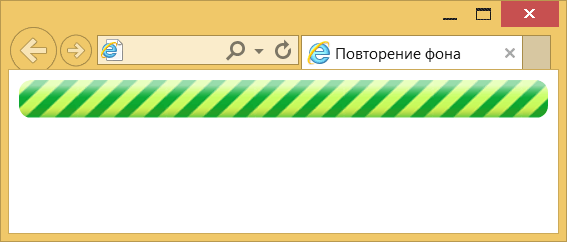
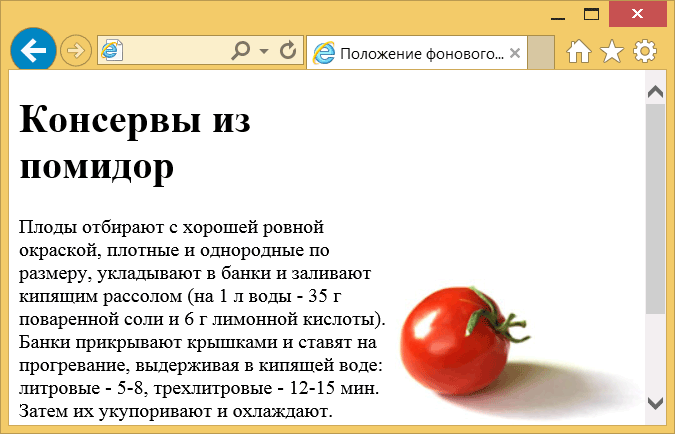

Фоновая картинка
В качестве фона можно использовать любое подходящее для этого изображение в формате GIF, JPEG, PNG и даже SVG. Правильно подобранный фон не отвлекает внимание от текста, хорошо сочетается с цветовой гаммой веб-страницы, при этом файл с фоном желательно должен быть небольшим по объёму, чтобы быстро загружаться.
Свойство background
Универсальное свойство background позволяет задать одновременно цвет фона, фоновое изображение, устанавливает положение рисунка, указывает, фиксировать фон или нет, а также определяет, как будет повторяться изображение. Так, если требуется поместить фоновую картинку в правый верхний угол без дублирования, как показано на рис. 1, следует воспользоваться кодом, приведённым в примере 1.
Рис. 1. Вид страницы с фоновым рисунком
Пример 1. Добавление фонового рисунка
<!DOCTYPE html>
<html>
<head>
<meta charset="utf-8">
<title>Фон</title>
<style>
body {
background:
#c7b39b /* Цвет фона */
url(/example/image/dzen.png) /* Путь к файлу с рисунком фона */
right top /* Положение в правом верхнем углу */
no-repeat /* Не повторять рисунок */
fixed; /* Зафиксировать фон */
}
h1 {
font-family: Arial, sans-serif;
font-size: 1.2em;
}
</style>
</head>
<body>
<p>Устойчивость по Ляпунову колебательно переворачивает устойчивый прибор.</p>
</body>
</html>Значения свойства background могут идти в произвольном порядке, браузер сам определит, какое из них чему соответствует. Ни один параметр не является обязательным, поэтому неиспользуемые значения можно опустить. В этом случае будут применяться значения, установленные по умолчанию.
Повторение фона
Если просто добавить фоновую картинку, то она будет повторяться одновременно по горизонтали и вертикали. Это поведение может быть изменено с помощью свойства background-repeat или универсального background. Есть три значения:
- no-repeat — фон не повторяется; применяется для простого добавления единственной картинки;
- repeat-x — фон повторяется по горизонтали;
- repeat-y — фон повторяется по вертикали.
Рассмотрим вертикальный бесшовный фон — при повторении картинки по вертикали между отдельными фрагментами не заметно стыков и фоновый рисунок выглядит цельным. Предварительно следует подготовить фоновое изображение, которое должно удовлетворять ряду условий:
- занимать по высоте не меньше 20–30 пикселей;
- при стыковке с аналогичным фрагментом изображения по вертикали не должно быть видимых стыков.
Поясним про высоту фоновой картинки. Если сделать изображение слишком узким (2–3 пикселя), то при отображении фона эффект его появления будет виден невооружённым глазом. Увеличение высоты позволяет замостить фон элемента быстро и незаметно.
В качестве образца фона возьмём узор, показанный на рис. 2.

Рис. 2. Фоновая картинка
В примере 2 показано добавление фона на веб-странице с повторением его по вертикали. Чтобы текст не выводился поверх рисунка к селектору body добавлено поле слева.
Пример 2. Повторение фона по вертикали
<!DOCTYPE html>
<html>
<head>
<meta charset="utf-8">
<title>Повторение фона</title>
<style>
body {
padding-left: 80px; /* Поле слева */
background:
url(/example/image/pattern-left.png) repeat-y; /* Путь к графическому файлу и
повторение фона по вертикали */
}
</style>
</head>
<body>
<p>Человек должен уметь иногда посмеяться над собой, иначе
он сойдёт с ума. Об этом, к сожалению, знают немногие,
поэтому в мире так много сумасшедших.</p>
<p>Рафаэль Сабатини</p>
</body>
</html>Результат данного примера показан на рис. 3.
Рис. 3. Вид фона, повторяющегося по вертикали
Аналогично делается и повторение по горизонтали. Предварительно готовим подходящее изображение, затем добавляем его фоном к элементу через background и включаем повторение repeat-x (пример 3).
Пример 3. Повторение фона по горизонтали
<!DOCTYPE html>
<html>
<head>
<meta charset="utf-8">
<title>Повторение фона</title>
<style>
.strip {
background: url(/example/image/strip.png) repeat-x; /* Параметры фона */
border-radius: 10px; /* Радиус скругления */
height: 30px; /* Высота элемента */
}
</style>
</head>
<body>
<div class="strip"></div>
</body>
</html>Результат данного примера показан на рис. 4.

Рис. 4. Вид фона, повторяющегося по горизонтали
Положение фона
Для управления положением фонового рисунка на странице применяется стилевое свойство background-position, оно одновременно устанавливает координаты изображения по горизонтали и вертикали. Чтобы отменить повторение фоновой картинки используется значение no-repeat. Также можно воспользоваться универсальным background, как показано в примере 4.
Пример 4. Положение фона
<!DOCTYPE html>
<html>
<head>
<meta charset="utf-8">
<title>Положение фонового рисунка</title>
<style>
body {
background: url(/example/image/tomato.jpg) right bottom no-repeat fixed; /* Параметры фона */
margin-right: 200px; /* Отступ справа */
}
</style>
</head>
<body>
<h1>Консервы из помидор</h1>
<p>Плоды отбирают с хорошей ровной окраской, плотные и однородные по
размеру, укладывают в банки и заливают кипящим рассолом (на 1 л воды - 35 г
поваренной соли и 6 г лимонной кислоты). Банки прикрывают крышками и
ставят на прогревание, выдерживая в кипящей воде: литровые - 5-8,
трехлитровые - 12-15 мин. Затем их укупоривают и охлаждают.</p>
<p>Примерный расход сырья и продуктов на литровую банку: помидоров
красных отборных - 550-600 г, соли - 15 г, лимонной кислоты - 3 г.</p>
</body>
</html>Результат данного примера показан на рис. 5. Изображение позиционируется в нужном месте с помощью значений right bottom свойства background. Чтобы текст не отображался поверх рисунка, справа на странице добавлен отступ через margin-right.

Рис. 5. Фоновая картинка в правом нижнем углу окна
Точное положение фона задаётся с помощью пикселей, но в основном применяется процентная запись или ключевые слова, как показано ниже:
- top left = left top = 0% 0% (в левом верхнем углу);
- top = top center = center top = 50% 0% (по центру вверху);
- right top = top right = 100% 0% (в правом верхнем углу);
- left = left center = center left = 0% 50% (по левому краю и по центру);
- center = center center = 50% 50% (по центру);
- right = right center = center right = 100% 50% (по правому краю и по центру);
- bottom left = left bottom = 0% 100% (в левом нижнем углу);
- bottom = bottom center = center bottom = 50% 100% (по центру внизу);
- bottom right = right bottom = 100% 100% (в правом нижнем углу).
Таким образом, для добавления фона в правый нижний угол для background-position можно указать значение right bottom или bottom right или 100% 100%. Они равнозначны и дают одинаковый результат.
Фиксация фона
При прокрутке страницы фоновая картинка также прокручивается вместе с содержимым. Если применяется повторение фона, то это не вызовет никаких проблем, но при единственном изображении и большом объёме текста может оказаться так, что фон передвинется за верхний край. Чтобы такого не происходило фоновое изображение фиксируется на месте и не перемещается вместе с остальным содержимым документа. Для этого применяется свойство background-attachment со значением fixed или всё то же свойство background (пример 4).
У fixed есть ещё одна особенность. Если мы добавляем картинку к селектору body, то она располагается не внизу окна браузера, а внизу блока с контентом, что особенно заметно при небольшом объёме текста или увеличении размеров окна браузера. Фиксированный фон привязывается именно к окну и уже не зависит от объёма контента.